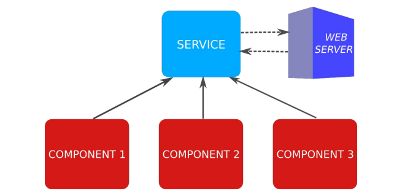

3.1 Componentes y Servicios en Angular
Componentes anidados
Tal como se vió en la unidad anterior, los componentes pueden anidarse unos dentro de otros. Por ejemplo, cada elemento de una lista puede separarse en un componente independiente.
Para el ejemplo se va a crear un nuevo componente llamado product-item que representará cada uno de los productos de la lista. El componente product-list se modificará para que utilice el nuevo componente.
También se creará un componente que servirá para puntuar un producto, que estará anidado dentro de product-item.
Anidando componentes
El nuevo componente product-item se utilizará para representar cada uno de los productos de la lista. De momento, se usarán datos estáticos para representar los productos, más adelante obtendrá los datos del componente padre.
Se almacena la información del producto en una variable llamada product que se utilizará a mode de placeholder para maquetar la información. La plantilla HTML del componente se modificará para que utilice esta información.
| product-item.html | |
|---|---|
Básicamente, se ha copiado el código HTML de la tabla de la lista de productos, para que muestre una fila de la tabla <tr>. Ahora se puede modificar el componente products-list para que utilice el nuevo componente.
...
<tbody>
@for(product of products | productFilter:filterSearch; track product.id) {
<app-product-item></app-product-item>
}
</tbody>
...
Debemos importar el componente ProductItem en products-list.ts:
...
import { ProductItem } from '../product-item/product-item';
@Component({
//...
imports: [
//...
ProductItem
],
//...
})
export class ProductsList {
//...
También se debe mover los estilos CSS de la tabla a product-item.css:

Se puede observar que la estructura de la tabla no es correcta, hay un problema con las filas <tr> y las columnas <td>. Esto se debe a que el componente <app-product-item> está situado entre la tabla y cada fila y el navegador no puede interpretar correctamente la estructura de la tabla.
Solución. Selector de atributo y clase
En el selector del componente, en lugar de crear un nuevo elemento selector: 'app-product-item', se puede utilizar un selector, tipo CSS, de clase selector: '.product-item' o de atributo selector: '[app-product-item]'. De esta forma, el componente se cargará dentro del elemento al que se añada esta clase o atributo y no se creará un componente adicional.
//...
@Component({
selector: '[app-product-item]',
//...
})
export class ProductItem {
//...
Se elimina la etiqueta <tr> de la plantilla HTML del componente product-item al componente product-item:
| product-item.html | |
|---|---|
Ahora, la plantilla products-list.html se puede modificar para que utilice el selector de atributo:
//...
<tbody>
@for(product of products | productFilter:filterSearch; track product.id) {
<tr app-product-item></tr>
}
</tbody>
//...
Anidar StarRating
El siguiente paso es implementar el componente star-rating, que presentará un sistema de puntuación de 1 a 5, representado con estrellas. Para mostrar las estrellas se podrían utilizar caracteres unicode (/) o imágenes. En este caso se utilizarán imágenes de la librería bootstrap-icons.
Y se añade a styles.css para que cargue los iconos de bootstrap:
| styles.css | |
|---|---|
Ahora se va a crear el código del componente star-rating:
| star-rating.ts | |
|---|---|
Y la plantilla HTML:
| star-rating.html | |
|---|---|
Con el componente creado, se debe importar en product-item.ts:
//...
import { StarRating } from '../star-rating/star-rating';
@Component({
//...
imports: [
StarRating,
//...
],
//...
})
export class ProductItem {
//...
A continuación, se modifica la plantilla HTML del componente product-item para añadir un nuevo elemento <td> con la valoración del producto:

Comunicación entre componentes anidados
En el ejemplo anterior, el componente product-item se ha creado con datos estáticos. Aún no se ha implementado la funcionalidad para presentar los datos de cada producto, puesto que aún no sabemos cómo se comunican los componentes entre sí.
Decorador @input
Para indicar que un componente recibe datos de entrada por parte del componente padre, creamos una nueva propiedad y la decoramos con @Input(). Esto indica a Angular, que el valor de la propiedad será obtenido a partir de un atributo con el mismo nombre, en el selector HTML del componente actual.
A modo de ejemplo, se va a pasar al componente product-item, los datos del producto a mostrar y el booleano que indica si la imagen debe mostrarse:
//...
<tbody>
@for(product of products | productFilter:filterSearch; track product.id) {
<tr app-product-item
[product]="product"
[showImage]="showImage">
</tr>
}
</tbody>
//...
Y se modifica el componente product-item.ts para que reciba los datos del producto y el booleano:
import { Component, Input } from '@angular/core';
//...
export class ProductItem {
@Input() product!: Product;
@Input() showImage!: boolean;
//...
}
El símbolo ! indica que la propiedad puede no tener valor (null o undefined). Esto es debido a que el valor de la propiedad se obtendrá del componente padre, por lo que no es necesario inicializarla.
Para terminar, se debe modificar el componente star-rating para que reciba la valoración del producto:
import { Component, Input } from '@angular/core';
//...
export class StarRating {
@Input() rating!: number;
}

Decorador @Output
Para comunicar un componente hijo con el padre, se utiliza el decorador @Output(). Este decorador se utiliza para indicar que un componente hijo puede emitir un evento que será capturado por el componente padre.
Se va a implementar una funcionalidad para que cuando se sitúe el puntero encima de una estrella, cambiar la puntuación del producto. Para ello, no se debe modificar el valor de la propiedad de entrada @Input(), ya que se desvincularía del padre y dejarían de actualizarse los datos automáticamente. Se creará una propiedad auxiliar auxRating inicializada al mismo valor recibido del componente padre.
Cuando se retire el cursor del componente, se restablecerá el valor de auxRating a la puntuación original:
import { Component, Input } from '@angular/core';
import { CommonModule } from '@angular/common';
@Component({
selector: 'app-star-rating',
standalone: true,
imports: [CommonModule],
templateUrl: './star-rating.html',
styleUrl: './star-rating.css'
})
export class StarRating {
auxRating!: number;
@Input() rating!: number;
ngOnInit() {
this.restoreRating();
}
restoreRating() {
this.auxRating = this.rating;
}
}
En la plantilla HTML, se añade un evento mouseover que llamará al método setRating cuando el puntero se sitúe encima de una estrella, y otro evento mouseleave que llamará al método restoreRating cuando el puntero se retire del componente:
| star-rating.html | |
|---|---|
De esta forma funciona al pasar el puntero por encima, pero falta que se actualice al hacer clic sobre una estrella. Para ello se va a utilizar el decorador @Output() para emitir un evento cuando se haga clic sobre una estrella. Este evento será capturado por el componente padre, que actualizará la puntuación del producto.
| star-rating.html | |
|---|---|
Esto hará que el método setRating() emita un evento al componente padre con la nueva puntuación. Para ello, se crea un emisor de eventos con el decorador @Output. El evento se llamará ratingChanged y emitirá un número, que será la nueva puntuación del producto.
//...
export class StarRating {
//...
@Output() ratingChanged = new EventEmitter<number>();
setRating() {
this.ratingChanged.emit(this.auxRating);
}
//...
}
En el componente product-item se capturará el evento ratingChanged, se accederá al valor emitido (la nueva puntuación) con la variable especial $event. En este caso, como se modifica la propiedad de un objeto, no hace falta que lo haga el componente padre products-list que contiene el array de objetos, ya que los objetos siempre se pasan por referencia.
//...
<td>
<app-star-rating [rating]="product.rating"
(ratingChanged)="changeRating($event)"/>
</td>
//...
export class ProductItem {
//...
changeRating(rating: number) {
this.product.rating = rating;
}
}
Servicios. Inyección de dependencias
Un Servicio es una clase cuyo propósito es mantener una lógica (y datos) compartidos entre diferentes componentes de la aplicación. Esto es útil tanto para agrupar funcionalidad común de varios componentes, como para compartir datos entre componentes que no tengan relación de parentesco.
También se recomienda su uso para acceder a datos externos (servicios web). Cuando un componente de Angular (o filtro, o directiva, u otro servicio, etc.) necesita usar un servicio, existe un componente interno llamado inyector de dependencias (común en muchos frameworks), que nos proveerá el objeto de dicho servicio. Sólo se creará como máximo una instancia de dicho servicio para la aplicación (Singleton).

En la aplicación de ejemplo, se usa un Servicio para almacenar los productos, que en el futuro se obtendrá de un servicio web. Por ahora se creará en un directorio llamado services/:
Esto creará un archivo product.service.ts con la clase del servicio. Esta clase está precedida con el decorador @Injectable(), que indica que la clase es un servicio y que puede ser inyectado en otros componentes.
| product.service.ts | |
|---|---|
En la clase del servicio, se creará un método que devuelva el array de productos:
Ahora que los productos están en el servicio, se debe hacer que el componente products-list los obtenga de ahí. Para inyectar el servicio en el componente, Angular utiliza una característica de TypeScript. Si se declaras en el constructor un parámetro con el modificador public o private en el constructor, TypeScript declara un atributo en la clase con el mismo nombre y hace una asignación del parámetro automática.
Indicando el tipo de parámetro ProductService, al ser una clase de tipo servicio (@Injectable), Angular pasa automáticamente un objeto de dicha clase (creándolo si es la primera vez que se utiliza) al constructor. Esto es la inyección de dependencias.
Finalmente, en el método ngOnInit, se llama al método del servicio que devuelve los productos. Como ya es necesario, se borra el contenido del array de productos y se inicializa como array vacío (en lugar de no darle valor), ya que si no, podría fallar el @for (el atributo estaría undefined) mientras se obtienen los datos. Esto es porque en un entorno real, el servidor tendrá un retardo en devolver los datos, y si Angular intenta recorrer los productos antes de eso a partir de un array sin valor (undefined), aparecería un error.